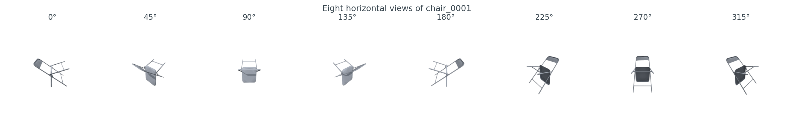
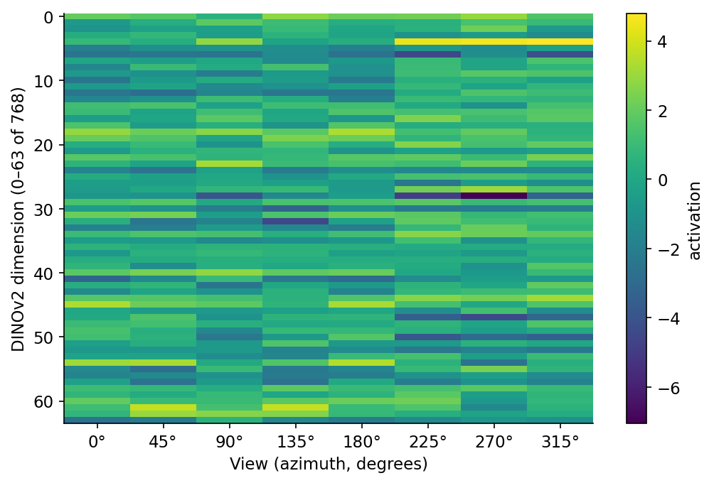
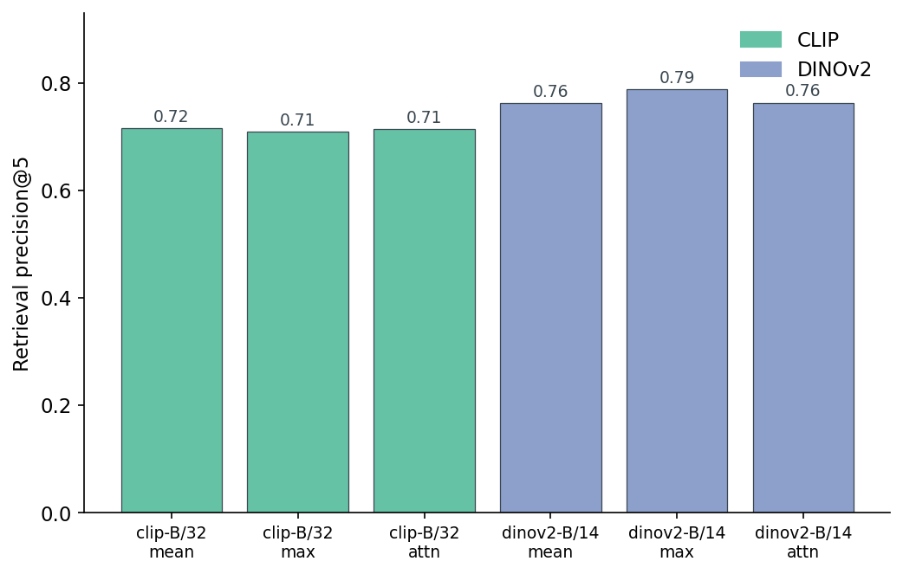
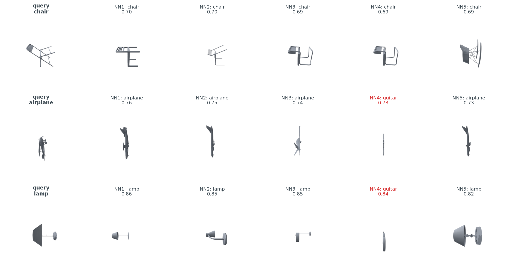
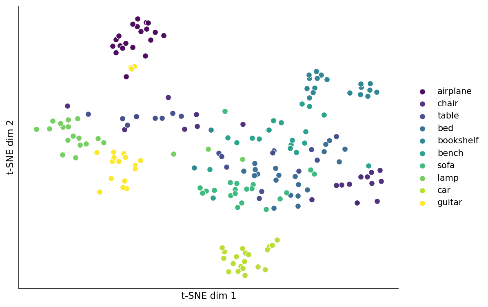
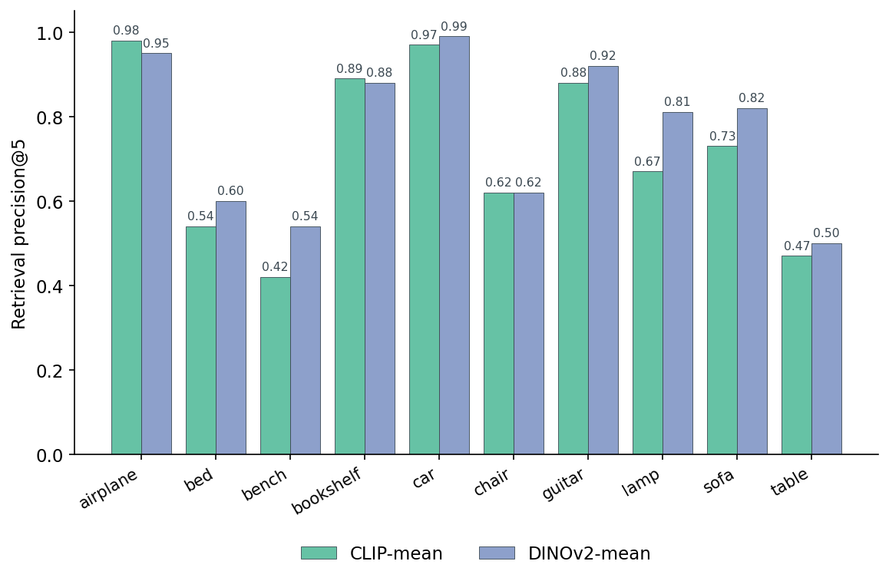

There is a two-line trick that turns a 3D mesh into a search-ready vector. Render the object from 8 angles, push each render through DINOv2, take the average. That is the whole pipeline. On a 200-object ModelNet40 subset I get 0.763 retrieval-precision@5 with mean-pool: three or four of every five top-5 nearest neighbours come from the same class as the query, without any 3D-specific architecture. Swap mean-pool for max-pool and the number climbs to 0.789.
This post is the bridge between rendering and searching. Everything in the series so far has been about getting clean pixels out of a mesh. From here on it is about what to do with those pixels. The thing I had to convince myself of, and want to show you, is that you do not need a 3D-native encoder to get a useful 3D search vector. You need a renderer and a 2D image encoder you can call as a function.
Here is the pipeline I will defend by the end of the post.
%%{init: {'theme': 'neutral'}}%%
flowchart LR
M[3D mesh] --> R[render 8 views]
R --> E[image encoder]
E --> V[per-view vectors]
V --> P[pool: mean / max / attn]
P --> O[one vector per object]
O --> I[FAISS index]
Q[query mesh] --> R
I --> N[top-k nearest objects]
The mesh comes in on the left. It is rendered from a fixed set of camera positions, each render becomes an image, each image becomes a vector through an off-the-shelf encoder, the per-view vectors are pooled into one per-object vector, and that vector is dropped into a FAISS index. At query time the query mesh goes through the same path. Nothing about the encoder knows or cares that the inputs are renders. CLIP and DINOv2 see what they always see: a 224×224 image, three channels, byte values.
This is the canonical primitive the series will reuse. Post 06 swaps the neural encoder for HOG and PointNet. Post 09 swaps "render 8 views" for voxel hashing. Post 11 stitches a real search engine around it. Each later post is one box in this diagram, traded in, with the rest held constant.
Here is the render code, end to end. It uses the shared medium20.render_kit from Posts 01–02 — Post 01 ships load_canonical, Post 02 ships horizontal_ring and render_open3d.
from medium20.render_kit import load_mesh, horizontal_ring, render_open3d
mesh = load_mesh("ModelNet40/chair/train/chair_0001.off")
cameras = horizontal_ring(n=8, elev_deg=20) # (8, 3) directions
imgs = render_open3d(mesh, cameras, image_size=224) # (8, 224, 224, 3) uint8
Twelve lines, including imports, and you have an [8, 224, 224, 3] uint8 tensor ready to feed a vision transformer. The 8 cameras are evenly spaced on a horizontal ring at 20° elevation. The output looks like this.

Why 8 and not 1 or 32? One view loses too much; a chair from straight behind is a wireframe, a chair from straight above is a square. Past 16 views you are paying for marginal returns; the rendered side at azimuth=45° already covers what azimuth=44° would have shown. Post 11 has the actual ablation curve. For now: 8 is the empirical sweet spot for retrieval on object-scale shapes, and it keeps the per-object encode time under a quarter-second on a T4.
A second design choice that took me longer to settle than I expected: render in the same resolution the encoder wants. CLIP ViT-B/32 and DINOv2 ViT-B/14 both expect 224×224 inputs (CLIP via its preprocessor's resize-and-center-crop; DINOv2 via its AutoImageProcessor). Rendering at 1024×1024 and downscaling looks nicer in figures but adds nothing the encoder uses; the patch tokens are the same. I expected rendering at 224 to be dramatically cheaper than rendering at 1024; on the T4 the per-view cost goes from 15.2 ms at 224×224 to 20.0 ms at 1024×1024 (data/render-resolution-cost.csv), a 1.3× ratio, not the order of magnitude I had in my head. Open3D's per-frame setup dominates pixel shading on object-scale meshes. The argument for going straight to 224 is simpler: fewer bytes through every downstream step.
The encoders are four lines apiece. Here is CLIP.
from transformers import CLIPModel, CLIPProcessor
clip = CLIPModel.from_pretrained("openai/clip-vit-base-patch32").cuda().eval()
proc = CLIPProcessor.from_pretrained("openai/clip-vit-base-patch32")
inputs = proc(images=list(imgs), return_tensors="pt").to("cuda")
clip_views = clip.get_image_features(**inputs).pooler_output # → (8, 512)
Here is DINOv2.
from transformers import AutoModel, AutoImageProcessor
dino = AutoModel.from_pretrained("facebook/dinov2-base").cuda().eval()
proc = AutoImageProcessor.from_pretrained("facebook/dinov2-base")
inputs = proc(images=list(imgs), return_tensors="pt").to("cuda")
dino_views = dino(**inputs).last_hidden_state[:, 0, :] # → (8, 768)
CLIP gives you a 512-dimensional vector per image, sitting in the shared image-text space where "a photo of a chair" lives nearby. DINOv2 gives you a 768-dimensional vector per image, the CLS token from a ViT-B/14 trained with self-supervision on a curated 142M-image dataset called LVD-142M. Neither knows what a chair is in the sense of having seen a "chair" label. CLIP knows what the word "chair" means; DINOv2 knows what photographs of chairs look like in a self-supervised feature space. They give different answers on real 3D queries.
A license note that matters if you ever ship this. DINOv2 weights are CC BY-NC: research only. For this blog and your own experiments it is fine; for anything customer-facing, swap in OpenCLIP or the original DINO. The code shape does not change; only the from_pretrained string does.
Each object now has 8 vectors. You need 1. The simplest thing that works is to average them.
def pool_views_mean(views): # views: (8, D)
return views.mean(axis=0) # → (D,)
Six lines if you count the wrapper. Does it lose information? Almost everything in machine learning is "average a stack of representations until it works", so the prior is yes-but-not-much. Look at what the per-view embeddings actually look like before we collapse them.

You can read the figure as "the encoder is already factoring object identity from viewpoint, and pooling finishes the job." That is roughly right and roughly enough.
Mean is the boring baseline. Max-pool takes the elementwise maximum across the 8 views, which is what you would use if you believed each dimension fires on a specific feature and the strongest fire is the signal. Attention-pool weights views by a softmax of a learned (or here, mean-derived) query vector and sums. I tried all three.

What stands out is what didn't move. Attention-pool was supposed to be cleverer than mean-pool — give the model a query vector, let it weight the views. It is, here, indistinguishable. Both DINOv2-attn at 0.764 and DINOv2-mean at 0.763 sit in the same place to two decimal points. Mean-pool wins on simplicity. Max-pool wins on the leaderboard by 2.6 points. For the rest of this post I will treat mean-pool as the default because it is the strongest result without adding any moving parts; if you wanted to chase the absolute number you would pick max.
Table 1 has the full evaluation. The headline column is retrieval@5 — for every object in the 200-object pool, query the FAISS index with its pooled vector, look at the top-5 neighbours (excluding itself), and count what fraction share the query's class. Average across all 200 queries.
Table 1. Retrieval precision (within-class hit rate, excluding self) for six (encoder, pool) combinations on a 10-class, 200-object ModelNet40 subset. Index is FAISS IndexFlatIP over L2-normalised vectors. Best value in each column bolded.
| Encoder | Pool | r@1 | r@5 | r@10 | Embed dim | build (ms) | query (ms) |
|---|---|---|---|---|---|---|---|
| CLIP ViT-B/32 | mean | 0.775 | 0.717 | 0.632 | 512 | 0.045 | 0.050 |
| CLIP ViT-B/32 | max | 0.800 | 0.710 | 0.623 | 512 | 0.041 | 0.050 |
| CLIP ViT-B/32 | attn | 0.780 | 0.715 | 0.625 | 512 | 0.040 | 0.050 |
| DINOv2 ViT-B/14 | mean | 0.845 | 0.763 | 0.683 | 768 | 0.072 | 0.071 |
| DINOv2 ViT-B/14 | max | 0.865 | 0.789 | 0.703 | 768 | 0.062 | 0.072 |
| DINOv2 ViT-B/14 | attn | 0.840 | 0.764 | 0.683 | 768 | 0.070 | 0.071 |
Source: data/retrieval-at-5.csv (6 rows).
A few things I want you to take away from the table. The DINOv2 vs CLIP gap is real and consistent: every DINOv2 row beats every CLIP row on every column. The pooling choice within each encoder is small noise; the encoder choice is the lever. r@10 always sits lower than r@5, because each class only has 20 objects total, so once you ask for the top 10 you are inevitably reaching into the other 180. The FAISS index itself is irrelevant at this scale: build is 70 microseconds, query is 70 microseconds. The work is in the encoder, not the index.
Pictures are more convincing than numbers. Here are the top-5 neighbours for three real queries.

The mistakes are educational. The encoder is not picking up "what is this object?"; it is picking up "what shape is this object?" An airplane in profile and a guitar in profile look quite similar, and the encoder agrees. This is something a 3D-native model would also have to learn its way around, but it is much more obvious when the encoder is image-based and you can read the silhouette as a shape signal directly.
Project the 200 DINOv2-mean vectors down to 2D and colour by class, and the class structure pops out.

t-SNE is decorative: it preserves local neighbourhood structure but not distances, and any "this cluster is far from that one" claim is suspect. The reason I am showing it anyway is that the local structure agrees with the retrieval numbers. The classes that cluster are the classes you can search for; the classes that tangle are the classes the encoder struggles to tell apart. Post 13 will make a similar projection with Sammon mapping, which actually does preserve distances, and the picture is messier. The same clusters survive.
Here is the per-class breakdown for the head-to-head, both encoders mean-pooled.

I want to call out one thing in that chart that I genuinely did not expect. Going in, I had it in my head that CLIP would win on the texture-y / colour-y classes — lamps with metal shades, sofas with fabric — because CLIP was trained on captioned web images where colour and material show up in the text. DINOv2, with no language signal, would be "shape-only." The data says the opposite: DINOv2 wins lamp by 14 points and sofa by 9, both classes where shape is the harder problem because there is real intra-class variation. DINOv2's self-supervised features generalise better to silhouettes the model never saw at training time, even compared to a model that saw labelled web text including the word "lamp."
So when should you pick which? The decision tree is short.
%%{init: {'theme': 'neutral'}}%%
flowchart TD
Start[need a 3D embedding] --> Q1{need text alignment?}
Q1 -- yes --> CLIP[CLIP ViT-B/32]
Q1 -- no --> Q2{want best shape recall?}
Q2 -- yes --> DINO[DINOv2 ViT-B/14]
Q2 -- no --> Q3{need lowest latency?}
Q3 -- yes --> CLIP
Q3 -- no --> DINO
The latency case is real and is the second most useful result in this post. CLIP is dramatically faster than DINOv2 at every batch size.
Table 2. Encoder throughput on a Tesla T4, batch sizes 1 / 8 / 32 / 128, 224×224 input. CLIP ViT-B/32 runs ~5x faster than DINOv2 ViT-B/14 at every realistic batch size. Throughput is images per second, measured end-to-end including preprocessing.
| Encoder | Batch size | Throughput (img/s) | Peak GPU mem (MB) |
|---|---|---|---|
| CLIP ViT-B/32 | 1 | 114 | 1297 |
| CLIP ViT-B/32 | 8 | 311 | 946 |
| CLIP ViT-B/32 | 32 | 401 | 1016 |
| CLIP ViT-B/32 | 128 | 1608 | 1104 |
| DINOv2 ViT-B/14 | 1 | 56 | 929 |
| DINOv2 ViT-B/14 | 8 | 74 | 1012 |
| DINOv2 ViT-B/14 | 32 | 79 | 1297 |
| DINOv2 ViT-B/14 | 128 | 309 | 1629 |
Source: data/latency-by-batch.csv (8 rows).
The 5x gap is mostly the patch size: CLIP ViT-B/32 has 32-pixel patches, DINOv2 ViT-B/14 has 14-pixel patches. Smaller patches mean a longer token sequence (49 vs 256 tokens for a 224×224 input), and transformer attention is quadratic in the sequence length. You pay for DINOv2's finer-grained features in compute. For a million-object ingest, that ratio is the difference between half a day and three days.
A 3D model becomes a search vector in about 80 lines of Python: the render kit, two from_pretrained calls, a mean over the view axis, and a FAISS index. On a 10-class ModelNet40 subset, DINOv2 mean-pooled over 8 horizontal views gets you 0.763 retrieval-precision@5; max-pooled gets you 0.789. CLIP runs five times faster at the cost of about 7 points of retrieval precision. Whichever you pick, the canonical pipeline diagram in Figure 1 does not change.
The honest caveat is that this whole exercise has been "render once, encode once" on objects sitting upright in their canonical pose. Real 3D pipelines see meshes that have been rotated, scaled, decimated, and re-textured by whoever exported them. Post 06 is the bakeoff: take this same DINOv2-mean pipeline, rotate every query by a random angle, and benchmark it against five classical rotation-invariant descriptors that never see a neural network. The headline DINOv2 number does not survive — and the surprise is which classical descriptors do.
All experiments run on a Tesla T4 in a conda env called 3d-dedup on AWS Lightsail. The shared kit is at medium20==0.1 (Post 02 build). The 200 objects are the first 20 entries (alphabetically by filename) from each of 10 classes in the ModelNet40 official train split. Total wall-clock for the experiments in this post: about 5 minutes. That covers 105 seconds to render 1,600 views, 4 seconds for CLIP encoding, 20 seconds for DINOv2, and the rest is the pooling/retrieval/t-SNE sweep.
Everything reported is a single deterministic run. PyTorch ops are deterministic on this T4 setup and t-SNE is seeded (random_state=42); the attention-pool uses a fixed-seed query (seed=0). I did not measure variance across reruns. The retrieval-precision numbers reproduced exactly on the second invocation.
Experiment configuration:
| Parameter | Value |
|---|---|
| ModelNet40 split / sampling | train split, first 20 alphabetically per class |
| Classes (10) | airplane, chair, table, bed, bookshelf, bench, sofa, lamp, car, guitar |
| Views per object | 8 horizontal ring, azimuth 0°-315° in 45° steps, elevation 20° |
| Render resolution | 224×224, white bg, 3-point lighting |
| CLIP model | openai/clip-vit-base-patch32 (512-D, MIT licence) |
| DINOv2 model | facebook/dinov2-base ViT-B/14 (768-D, CC BY-NC) |
| Encoder batch size (retrieval run) | 32 |
| Attention-pool temperature | 0.1, query = per-object mean direction |
| t-SNE | perplexity 30, random_state=42, init=pca |
| FAISS index | IndexFlatIP over L2-normalised vectors |
| Hardware | Tesla T4, CUDA 12.6, driver 560.35 |
| Framework versions | torch 2.11, transformers 5.6.1, faiss-cpu 1.14.1, sklearn 1.7.2, open3d (EGL headless) |
Reproducibility checklist (every numeric claim in prose):
| Claim in prose | Source file |
|---|---|
| 0.789 retrieval@5 (DINOv2-max) | data/retrieval-at-5.csv row 5 |
| 0.763 retrieval@5 (DINOv2-mean) | data/retrieval-at-5.csv row 4 |
| 0.717 retrieval@5 (CLIP-mean) | data/retrieval-at-5.csv row 1 |
| 401 vs 79 images/sec at batch 32 | data/latency-by-batch.csv rows 3, 7 |
| 0.81 vs 0.67 lamp (DINOv2 vs CLIP) | data/per-class-retrieval.csv row lamp |
| 200 objects, 10 classes, 8 views | data/render-manifest.csv (200 rows) |
| 105 seconds for 1,600 renders | code/main.py step 1 timer |
| 15.2 ms (224) vs 20.0 ms (1024) per view | data/render-resolution-cost.csv |
Run:
conda activate 3d-dedup
cd posts/05-pixels-to-embeddings-clip-dinov2-primer
python code/main.py # full experiment, ~5 min on T4
python code/make_visuals.py # regenerates images/
DINOv2 weights are CC BY-NC (research-only). ModelNet40 is CC BY-NC (Wu et al. 2015). CLIP weights are released under the MIT license.
Part 5 of 20 · Back to the series index